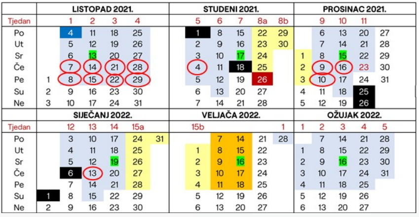
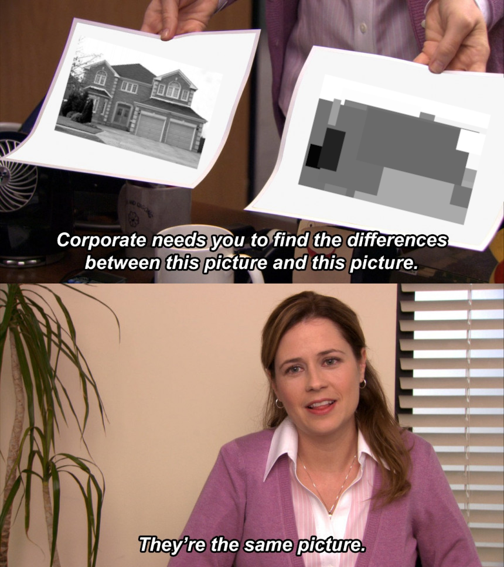

Ide li gradivo prema Čupićevoj knjizi i može li netko tko je bio na predavanjima reći što je do sada odrađeno?
http://java.zemris.fer.hr/nastava/pioa/knjiga-0.1.2013-12-30.pdf
Proradio ferko
Kako izgleda odgovaranje labosa?
restanikrumpir Na prvom labosu je bilo tako da prvo pokreneš za jedan od algoritama i onda pogledaju šta ti ispiše pa te dalje pita kako radi, koja je razlika između algoritama i da mu nešto u kodu pokažeš kako je implementirano. Bodovanje skroz korektno.
Jel imamo negdje ispite sa stare vještine?
Jel imamo odsad normalno predavanja samo cetvrtkom ili?
bjunolulz 
Jbmti 1. zadatak.
jesu vam upisani bodovi za 2. labos?
blablajar nisu
Kolko sam skuzio do iduceg ponedjeljka moramo predat i 5. i 6. zadacu. Jel sam ja to nesto krivo shvatio, jer mi se to cini malo pre cracked?
Fikalo nazalost, dobro si skužio… makar nisam siguran je li baš do ponedjeljka, jer je rekao da ce pomaknuti labose na kraj tjedna, a predaja je do prvog termina
Koja je laksa domaca?
bjunolulz Meni je manje vremena trebalo za ovu 5. s višekriterijskim

done